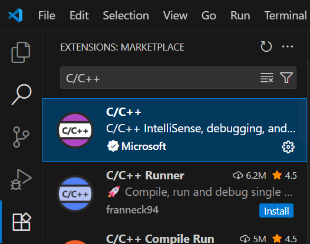

C / C++ Tutorial
What is C/C++?
C 是一种通用的过程式编程语言，强调性能和低级内存操作，广泛用于系统编程和嵌入式系统。
C++ 是一门在 C 语言基础上发展而来的通用编程语言，既支持面向过程的底层开发，又支持面向对象、泛型与模板元编程，可直接操作内存、编写高性能代码，也能利用 STL 与庞大生态快速构建复杂应用，广泛用于系统软件、游戏引擎、金融交易、嵌入式及高性能服务等场景。
C语言本质是一种标准，既然是一种标准，那么它可以被用不同方法实现。C语言通过编译器来实现。C编译器有很多，常见的有gcc msvc llvm等不同的编译器，实现C语言的方式不同，编译出来的汇编代码不尽相同。 确切地说，C的标准也有不同版本，比方说ISO C、ANSI C和GNU C等 GNU C即Linux编写中用的C语言，相比ANSI C多出了一些特性。 一些编译器不完全支持所有的C语言标准，一些编译器提供了自己扩展过的特性，但是C语言常用的写法是相通的
C/C++的程序内容编写通常是基于头文件（.h/.hpp）和源文件（.c/.cpp）进行的。在计算机上，C/C++的开发需要基于IDE（Integrated Development Environment，集成开发环境）进行。 IDE集成了代码编辑器、编译器、调试器等工具，能够大大提高开发效率。常见的IDE有Visual Studio、Eclipse、CLion、VSCode等。我们主要使用VSCode进行开发。
Structure of a C program
一个标准的 C 程序通常包含以下几个部分：
预处理指令（如 #include <stdio.h>）
全局声明（如全局变量、函数声明）
主函数 main()（程序入口）、以及其他函数实现。
#include <stdio.h>
int add(int a, int b) {
return a + b;
}
int main() {
int result = add(3, 4);
printf("Result: %d\n", result);
return 0;
}
Compile and Assembly Language
在完成了代码的编写后，为了能够运行这个程序，我们需要将面向用户的代码转换为机器可以读懂的机器指令,也就是可执行文件从而让计算设备按照用户的需求执行相应的命令
流程上通常是：预处理(Preprocess) → 编译(Compile) → 链接(Link)。
第一个阶段是预处理阶段，在正式的编译阶段之前进行。预处理阶段将根据已放置在文件中的预处理指令来修改源文件的内容。
第二个阶段编译、优化阶段，经过预编译得到的输出文件中，只有常量；如数字、字符串、变量的定义，以及c语言的关键字，如main,if,else,for,while,{,}, +,-,*,\等等。 编译程序所要作得工作就是通过词法分析和语法分析，在确认所有的指令都符合语法规则之后，将其翻译成等价的中间代码表示或汇编代码。
优化处理是编译系统中一项比较艰深的技术。它涉及到的问题不仅同编译技术本身有关，而且同机器的硬件环境也有很大的关系。 优化一部分是对中间代码的优化。这种优化不依赖于具体的计算机。另一种优化则主要针对目标代码的生成而进行的。
汇编（Assembly Language，C语言的目标代码）实际上指把汇编语言代码翻译成目标机器指令的过程。对于被翻译系统处理的每一个C语言源程序，都将最终经过这一处理而得到相应的目标文件。目标文件中所存放的也就是与源程序等效的目标的机器语言代码。目标文件由段组成。
由汇编程序生成的目标文件并不能立即就被执行，其中可能还有许多没有解决的问题。 链接程序的主要工作就是将有关的目标文件彼此相连接，也即将在一个文件中引用的符号同该符号在另外一个文件中的定义连接起来， 使得所有的这些目标文件成为一个能够被操作系统装入执行的统一整体。
Install VSCode
下载VScode(Windows/Linux)(https://code.visualstudio.com)

安装C/C++扩展
Install GCC Compiler
Linux:
sudo apt update
sudo apt install build-essential
gcc --version
Windows:
下载并安装MinGW(https://winlibs.com/)

下载后解压缩
添加环境变量：设置->编辑系统环境变量->系统变量->Path->编辑，添加MinGW的bin目录路径
Start You First C/C++ Program
打开VSCode, 创建一个新的 C 文件并编写代码。
#include <stdio.h>
int main() {
printf("Hello, World!\n");
return 0;
}
打开终端，使用终端编译并运行代码。
输入 gcc -o helloworld helloworld.c 编译代码，输入 ./helloworld.exe 运行程序。
What is a Variable?
在 C/C++ 中，变量是存储数据的命名容器，它们占用内存空间，类型决定了存储的数据和占用的大小, 存储方式与解释规则。它的值可以在程序运行时改变， 变量主要包含标识符(identifier)、类型(type)、数据(data)、地址(address)、大小(size)、作用域(scope)和生命周期(lifetime)七个基本属性。
变量的使用需要声明与初始化
声明：告诉编译器变量的类型和名称
初始化：给变量赋初值
变量是内存的抽象表示，类型决定它能存储什么以及如何解释存储的二进制数据。
int a; // 声明一个变量
a = 10; // 初始化变量
int b = 0; // 声明并初始化，即定义一个变量，也可以通过int b (10);或者 int b {10};来定义变量
float a = 1.0f; //声明一个变量和前一个同名变量会怎样？
int a = 20; //重复定义同一个变量会怎样？
变量的命名规则：只能包含字母、数字和下划线，且不能以数字开头，不能使用C/C++的关键字。
Integers
整型（Integer）存储整数值（正数、负数、零）包括 int, short, long 等， 区别主要在于可表示的范围和内存占用,有符号/无符号之分。虽然他们这些类型都表示整数，但是占用的内存空间并不同，能表示的整数范围也不同。
嵌入式开发中，为了对内存进行高效控制，将这些整数类型定义成了int8 int16 int32 int64，分别表示8位、16位、32位和64位有符号整数。 所以int8可以保存-128~+127的整数（符号占用一位），int16可以保存-32768~+32767的整数……但是随着位数数量增加，计算对应类型的整数的复杂度也会增加。
此外无符号整数在嵌入式开发中也有频繁的使用，标准的C语言里面在类型前加unsigned即可成为无符号整数，在嵌入式开发中， 一般使用uint8、uint16、uint32、uint64代替。
Floating Point
浮点数（Float/Double）存储小数或科学计数法表示的数值, float（32位）精度较低, double（64位）精度较高。
浮点数在定义时需要加后缀f，比如float a = 1.0f;
Character
字符型（char）是一个8位的数据类型，用于存储单个字符，一般用 ASCII 编码;
C++可以使用 wchar_t 或 char16_t/char32_t 支持 Unicode，表示多字节或国际字符。
char同时也可以用来表示整数，比如signed char表示有符号整数，unsigned char表示无符号整数。如果仅仅只有char的话， 那么根据编译器不同既可能出现有符号也可能出现无符号的情况。
Sizeof()和size_t
sizeof()是一个运算符，用于获取数据类型或变量所占用的字节(byte, 1byte=8bit)数。
size_t是一个（32位/64位）无符号整数类型，通常用于表示对象的大小或数组的索引。
#include <stdio.h>
int main() {
int a = 5;
float b = 3.14f;
printf("Size of int: %zu bytes\n", sizeof(a));
printf("Size of float: %zu bytes\n", sizeof(b));
return 0;
}
Overflow
溢出（overflow）是指当一个变量的值超出其数据类型所能表示的范围时发生的现象。
比如说，对于一个8位的无符号整数（uint8_t），它的取值范围是0到255，如果将其赋值为257，就会发生溢出，实际存储的值会变成1。 这是由于计算机在存储数据时只保留了低8位，高位被截断了。比如257的二进制表示是100000001，存储时只保留低8位00000001，所以发生了溢出。
溢出可能导致程序出现意想不到的行为，因此在进行数值运算时需要格外小心，确保不会超出数据类型的范围。
根据往年的经验，新手极有可能在遍历的过程中或者大位数运算的过程中忽略掉溢出的问题导致的bug，这样的bug由于缺乏特征往往难以发现
#include <stdio.h>
int main()
{
int a = 56789;
int b = 56789;
int c = a * b;
printf("c = %d\n", c); //溢出
return 0;
}
Constant and Macro
常量（constant）是指在程序运行过程中其值不能被改变的量。C/C++中可以使用#define预处理指令或const关键字来定义常量。
宏定义（macro）是通过#define预处理指令定义的符号常量或代码片段，在编译时会被直接替换为相应的值或代码。
#define PI 3.14159
#define SQUARE(x) ((x) * (x))
const int MAX_SIZE = 100;
想要强调的是宏是C/C++里面非常常用的预编译命令，这里只是很短地提及了一下。
Struct
结构体(Struct)将不同类型的数据组合成一个整体用于描述“对象”的属性，但不包含行为，类似现实世界的“记录卡片”，每个字段是一个属性；
struct Point {
int x;
int y;
};
typedef struct {
int id;
char name[20];
} Student; //使用typedef关键字进行修饰
Struct Point center = {0, 0}; //初始化结构体
Student s1 = {1, "Alice"};
Enumeration
枚举(enumeration)定义一组命名的整数常量，提升代码可读性和可维护性；
枚举和宏其实非常类似：宏在预处理阶段将名字替换成对应的值，枚举在编译阶段将名字替换成对应的值。 我们可以将枚举理解为编译阶段的宏.
注意：同一个程序中不能定义同名的枚举类型，不同的枚举类型中也不能存在同名的命名常量。 Enum变量大小和int大小一样（32位），实际上里面存储的就是整数
enum Week { MON=1, TUE=2, WED=3, THU=4, FRI=5, SAT=6, SUN=7 };
typedef enum{
GPIO_PIN_RESET = 0u,
GPIO_PIN_SET
} GPIO_PinState; //HAL库中常用的枚举定义
Arrays
数组（Array）是存储同类型元素的连续内存，支持通过索引访问和遍历。数组的元素类型可以是任何基本数据类型，定义时需指定大小，大小不可变。
数组可以通过TYPE array_name[size] = {};的方式进行定义。如果size为空，但是{}里面有具体的内容，编译器会根据内容自动推导出数组的大小。
C的数组仅是通过TYPE array_name[size];声明后其内存区域的内容是随机的，需要及时进行初始化。
由于C语言的数组不带有越界检查，所以访问数组时需要注意数组越界访问。
数组的访问方式是通过索引来访问每个元素，例如array_name[index]，这个过程的本质是对数组的地址进行偏移。
多维数组（Multidimensional Arrays）
多维数组是数组的数组，常见的有二维数组（矩阵）和三维数组。定义时需指定每个维度的大小，访问时需提供所有维度的索引。
int matrix[3][4] = {
{1, 2, 3, 4},
{5, 6, 7, 8},
{9, 10, 11, 12}
};
和一维数组一样，编译器可以通过初始化内容推导出数组的大小，但是仅限于数组信息充分的情况下，否则编译阶段就会发生报错。
访问二维数组元素的方式是matrix[row][col]，本质上是对数组地址进行多级偏移。
声明：本人并不推荐使用二维数组。
字符串
C语言的字符串本质上是字符数组(Array-like String)，以空字符（'\0'）结尾。
字符串的声明既可以透过数组的方式，也可以基于字面量进行声明
char str1[6] = {'H', 'e', 'l', 'l', 'o', '\0'}; //字符数组
char str2[] = "Hello"; //字符串字面量，编译器会自动添加结尾的'\0'
字符串的操作通常使用标准库函数，如strlen()计算长度，strcpy()字符串复制，memcpy()内存复制,strcat()连接等。
Pointer
我们在程序中有两种方式指代某块内存
通过变量名和通过该内存的地址
通过指代内存地址的方法访问内存
存储地址的变量被称为指针。
声明一个指针：在基本类型后面加上* 表示是该类型的指针,指针的类型，决定了程序在解引用时用何种方式解析指针指向的内存空间。 赋值一个指针：直接给它赋值内存地址 or 取一个变量的内存地址赋给它：取址符&。 当需要使用指针指向的内存地址的数据时，需要使用解引用运算符*。
int *p1; // 声明一个指向整数的指针
int a = 10; // 定义一个整数变量
int *p = &a; // 声明一个同类型的指针并将a的地址赋给它
printf("Value: %d\n", *p); // 通过指针访问a的值
*p = 20; // 通过指针修改a的值
printf("a = %d\n", a); // 输出a的值
Pointer Arithmetic
指针算术运算允许对指针进行加减操作，移动指针以访问数组元素或结构体成员。
指针加减整数：移动指针指向位置，单位为所指类型的大小。
int arr[5] = {10, 20, 30, 40, 50};
int *p = arr; // 指向数组第一个元素的地址
printfn("Address of first element: %p\n", (void*)p); // 输出第一个元素的地址
printf("First element: %d\n", *p); // 输出10
printf("First element: %d\n", *(p + 0)); // 输出10
printf("First element: %d\n", p[0]); // 输出10
p++; // 移动到下一个元素的地址
printfn("Address of second element: %p\n", (void*)p); // 输出第二个元素的地址
printf("Second element: %d\n", *p); // 输出20
printf("Second element: %d\n", *(p + 0)); // 输出20
printf("Second element: %d\n", p[0]); // 输出20
Difference between Pointer and Array
数组名可以认为是一个指针，对指针的大部分操作都是可以实现的。但是对数组进行sizeof操作时，返回的是整个数组的大小，然而对指针进行sizeof操作时，返回的是指针的大小，即4byte，说明编译器知道数组和指针的区别。
一个更具体的体现是使用char string[] = "Hello";定义一个字符串数组的时候可以直接基于字符串常量初始化，但是char *str = "Hello"//invalid;则不行。（但是const char *str = "Hello";是可以的）
此外对数组进行初始化的操作不能对指针使用，也就是说指针无法在声明后直接赋值初始化，这主要是和程序内存的分配方式有关（堆，栈）。
int arr[5] = {10, 20, 30, 40, 50}; // 数组初始化
int *p = arr; // 指针赋值，注意不需要&
//int *p2 = {10, 20, 30, 40, 50}; // 错误，指针不能初始化
arr[0] = 100; // 通过数组名访问和修改元素
p[1] = 200; // 通过指针访问和修改元素
Structure Pointer
结构体指针用于指向结构体变量，访问和修改结构体成员时使用箭头运算符（->）也可以先使用(*)获取结构体变量后使用点运算符（.）对成员变量进行操作
struct Point {
int x;
int y;
};
int main() {
struct Point p1 = {10, 20};
struct Point *p = &p1; // 指向结构体变量的指针
p->x = 30;
(*p).y = 40;
return 0;
}
IF
条件语句（if/else）根据布尔表达式的结果执行不同代码块，当条件为真时执行if或者else if块，否则执行else块。
if (condition) {
// code to execute if condition is true
} else if (another_condition) {
// code to execute if another_condition is true
} else {
// code to execute if condition is false
}
If Example
#include <stdio.h>
int main() {
int num = 10;
if (num > 0) {
printf("Positive\n");
} else if (num < 0) {
printf("Negative\n");
} else {
printf("Zero\n");
}
return 0;
}
For Loop
循环语句用于重复执行代码块，直到条件不满足。for循环适合已知迭代次数，在目标次数迭代完成后退出循环。
for (int i = 0; i < 5; i++) {
printf("Iteration %d\n", i);
}
此外，for循环可以通过break语句提前退出循环。如果是多个嵌套的循环，break语句只会退出最内层的循环。
While Loop
while循环在每次迭代前检查条件，适合未知迭代次数的场景，直到条件不满足才退出循环。
int count = 0;
while (count < 5) {
printf("Iteration %d\n", count);
count++;
}
需要注意到，如果while循环的条件一直为真，可能导致无限循环，这个特性有的时候故意被利用，但有时也会造成程序执行的异常
Switch Case
switch语句根据变量的值选择执行不同的代码块，适合多分支选择。每个case后需加break防止贯穿执行。
switch总体来说是一种比ifelse更加体面的用法，但根据往年的经验，大量的新手会在switch语句中遗漏break语句， 导致意外的行为。所以如果你在代码里面使用了switch语句，请务必检查每个case后是否都有break语句。
switch (variable) {
case value1:
// code to execute if variable == value1
break;
case value2:
// code to execute if variable == value2
break;
default:
// code to execute if variable doesn't match any case
}
Function
函数封装可复用逻辑从而提高代码的可读性和可维护性，在一个函数里面可以实现特定的功能，通过参数传递不同的输入，返回结果。
函数可以先声明再定义，也可以声明完马上定义。函数由返回值类型、函数名、参数、函数体构成。不返回返回值的函数，可以用void代替。
函数参数（Function Parameter）是传递给函数的输入值，可以是基本数据类型，也可以是指针、结构体等复杂类型， 这些参数可以通过值传递或引用传递的方式（C++）传递给函数。值传递会复制参数的值，而引用传递则是传递参数的地址，其中值传递会带来更多的开销（Cost） 但是C语言本身并没有提供引用传递的语法，所以通常会采用指针传递的方式代替，但是指针本身是一个很危险的东西， 所以在传递指针进入函数的时候最好有一个检查。
int add(int a, int b) { // 函数定义
int sum = a + b; // 计算和
return sum; // 返回结果
}
注意，上述函数中定义的result变量是局部变量，函数调用结束后会被销毁。因此，还需要注意变量的作用域（Scope）和生命周期（Lifetime）。
Function Pointer
函数指针是指向函数的指针变量，指向的是函数的入口地址，存放于代码区，可以通过它调用函数。函数指针的声明方式为：返回类型 (*指针名)(参数类型)。
函数指针最常用的场合是在各类需要回调函数的场景，通常此时就会使用函数指针来传递回调函数。
void callback(int status){
printf("%d\n", status);
}
void register_callback(void (*cb)(int)) {
cb(42); // 调用回调函数
}